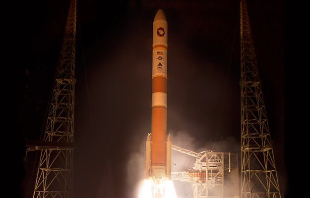

Highlights
ULA
-
Delta II is an American expendable launch system, originally designed and built by McDonnell Douglas. Read more... -

Atlas V is an active expendable launch system in the Atlas rocket family. Atlas V was formerly operated by Lockheed Martin, and is now operated by the Lockheed Martin-Boeing joint venture United Launch Alliance (ULA). Read more... -

The Delta IV Heavy (Delta 9250H) is an expendableheavy lift launch vehicle, the largest type of the Delta IV family, and the world's highest capacity rocket currently in operation. Read more...